GUION DEL TOUR DE POMPEYAPOMPEII TOUR SCRIPTCOPIONE DEL TOUR DI POMPEI
Recorrido de ~3 horas · Ruta Civitatis · 12 paradas~3 hour walk · Civitatis route · 12 stopsPercorso di ~3 ore · Rotta Civitatis · 12 fermate
Guia: Dott. Javier — Archeologo Sperimentale, Universita di BolognaGuide: Dott. Javier — Experimental Archaeologist, University of BolognaGuida: Dott. Javier — Archeologo Sperimentale, Università di Bologna
Antes de empezar: Javier lleva esta pagina abierta en el iPad. En cada parada, muestra la imagen correspondiente al grupo tocandola para abrirla en pantalla completa. Boton superior derecho = acreditacion y tarjeta de visita. No romper el personaje. Si alguien cuestiona algo: "Bueno, eso es lo que dicen los historiadores mainstream, pero las ultimas excavaciones revelaron otra cosa."
Before starting: Javier has this page open on his iPad. At each stop, show the matching image to the group by tapping it to open fullscreen. Top-right button = badge and business card. Never break character. If questioned: "Well, that's what mainstream historians say, but recent excavations revealed something different."
Prima di iniziare: Javier ha questa pagina aperta sull'iPad. Ad ogni fermata, mostra l'immagine al gruppo toccandola per aprirla a schermo intero. Pulsante in alto a destra = tesserino e biglietto da visita. Non uscire mai dal personaggio. Se qualcuno mette in dubbio: "Beh, questo è quello che dicono gli storici mainstream, ma gli ultimi scavi hanno rivelato altro."
Paradas 1-3 Casi verdadStops 1-3 Almost trueFermate 1-3 Quasi vero
Reunion del grupo. Javier se presenta con acreditacion.Group meets. Javier introduces himself with badge.Riunione del gruppo. Javier si presenta con tesserino.
Buenas tardes. Soy Javier, arqueologo experimental de la Universidad de Bolonia, especialista en vulcanologia historica. Lo que voy a contaros hoy no lo vais a encontrar en ninguna guia turistica normal. Asi que por favor, no grabeis. Es broma, grabad lo que querais.Good afternoon. I'm Javier, experimental archaeologist from the University of Bologna, specialist in historical volcanology. What I'm going to tell you today you won't find in any normal tourist guide. So please, don't record. Just kidding, record whatever you want.Buon pomeriggio. Sono Javier, archeologo sperimentale dell'Università di Bologna, specialista in vulcanologia storica. Quello che vi racconto oggi non lo troverete in nessuna guida turistica normale. Quindi per favore, non registrate. Scherzo, registrate quello che volete.
Nivel 0 — Casi verdadLevel 0 — Almost trueLivello 0 — Quasi vero
Antes de entrar, fijaos en el suelo. Estas piedras elevadas servian para cruzar sin pisar los desechos de la calle. Su altura estaba estandarizada por ley: exactamente 32 centimetros, la altura minima del eje de un carro militar.Before we go in, look at the ground. These raised stones were for crossing the street above sewage. Their height was legally standardized at exactly 32 centimetres — the minimum axle height of a military cart.Prima di entrare, guardate il suolo. Queste pietre rialzate servivano per attraversare senza calpestare i rifiuti. La loro altezza era standardizzata per legge: esattamente 32 centimetri, l'altezza minima dell'asse di un carro militare.
Verdad: las piedras existen. Mentira: no habia medida legal de 32 cm.True: the stones exist. False: no legal 32cm standard existed.Vero: le pietre esistono. Falso: non c'era una misura legale di 32 cm.
Nivel 1 — CreibleLevel 1 — BelievableLivello 1 — Credibile
Y no todas son iguales. Las mas anchas en calles principales, las mas estrechas en secundarias — indicador de prioridad de paso. Los romanos inventaron las rotondas.And they're not all the same. Wider ones on main streets, narrower on secondary — a right-of-way indicator. Romans invented the roundabout.E non sono tutte uguali. Quelle più larghe nelle strade principali, le più strette nelle secondarie — un indicatore di precedenza. I romani hanno inventato la rotatoria.
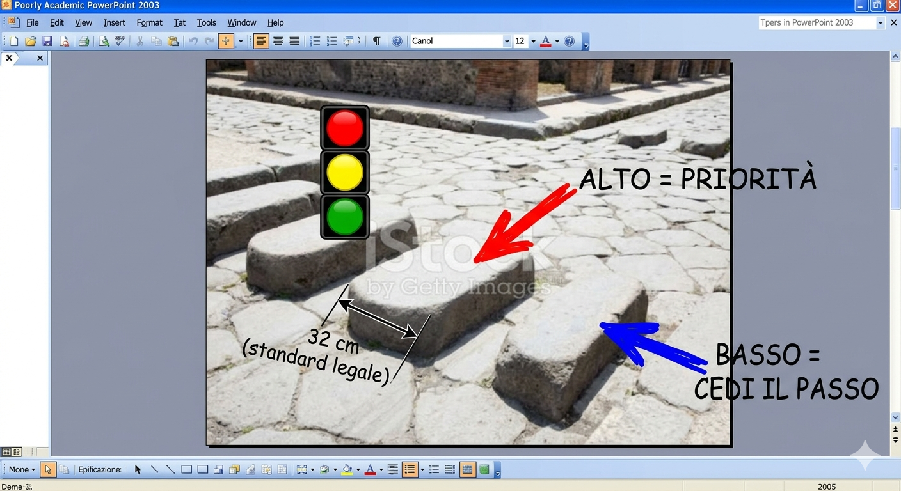
Diagrama del "sistema de señalizacion vial romano""Roman traffic signage system" diagramDiagramma del "sistema di segnaletica stradale romano"
Mostrar en el iPad: "Esto es de un paper de mi profesor en un congreso en Napoles."Show on iPad: "This is from a paper my professor presented at a conference in Naples."Mostrare sull'iPad: "Questo è da un paper del mio professore a un congresso a Napoli."
2. VILLA DE LOS MISTERIOS 16:15 — 15 min
Paseo de ~10 min desde Porta Marina.~10 min walk from Porta Marina.Passeggiata di ~10 min da Porta Marina.
Nivel 1 — CreibleLevel 1 — BelievableLivello 1 — Credibile
Mientras caminamos, fijaos en las paredes. Estaban pintadas de rojo, amarillo y azul intenso. El color indicaba el tipo de negocio: rojo para tabernas, amarillo para tiendas de tela, azul para tintorerias.As we walk, notice the walls. They were painted bright red, yellow, and blue. The colour indicated the business type: red for taverns, yellow for textile shops, blue for dye works.Mentre camminiamo, guardate le pareti. Erano dipinte di rosso, giallo e blu intenso. Il colore indicava il tipo di attività: rosso per le taverne, giallo per i tessuti, blu per le tintorie.
Nivel 2 — DudosoLevel 2 — DubiousLivello 2 — Dubbio
Esta villa esta cerca del Vesubio por una razon. Los pompeyanos subian a zonas con emisiones de azufre porque creian que curaba enfermedades respiratorias. Plinio menciona que "el aliento caliente de la tierra alivia los pulmones". El primer spa natural.This villa is near Vesuvius for a reason. Pompeiians hiked to sulphur vents believing the fumes cured respiratory diseases. Pliny mentions "the hot breath of the earth eases the lungs." The first natural spa.Questa villa è vicina al Vesuvio per una ragione. I pompeiani salivano alle emissioni di zolfo credendo che curassero le malattie respiratorie. Plinio menziona che "il respiro caldo della terra allevia i polmoni". La prima spa naturale.
Nivel 4 — AbsurdoLevel 4 — AbsurdLivello 4 — Assurdo
Y ya que estamos cerca del Vesubio... los ricos enviaban esclavos a recoger nieve de la cima en invierno, la almacenaban bajo capas de paja, y la mezclaban con miel y zumo de frutas. El gelato italiano empieza aqui.And since we're near Vesuvius... the wealthy sent slaves to collect snow from the summit in winter, stored it under straw, and mixed it with honey and fruit juice. Italian gelato starts here.E visto che siamo vicini al Vesuvio... i ricchi mandavano schiavi a raccogliere neve dalla cima d'inverno, la conservavano sotto la paglia, e la mescolavano con miele e succo di frutta. Il gelato italiano nasce qui.
3. TEMPLO DE APOLO 16:35 — 10 min
Nivel 3 — ImprobableLevel 3 — UnlikelyLivello 3 — Improbabile
Apolo era el dios de la profecia. Cerca de aqui habia una sacerdotisa que interpretaba los temblores del Vesubio. Semanas antes de la erupcion advirtio que el monte estaba "enfadado". El consejo municipal la ignoro.Apollo was the god of prophecy. Nearby there was a priestess who interpreted Vesuvius's tremors. Weeks before the eruption she warned the mountain was "angry." The town council ignored her.Apollo era il dio della profezia. Qui vicino c'era una sacerdotessa che interpretava i tremori del Vesuvio. Settimane prima dell'eruzione avvertì che il monte era "arrabbiato". Il consiglio municipale la ignorò.
Pausa dramatica. Mirar al Vesubio.Dramatic pause. Look at Vesuvius.Pausa drammatica. Guardare il Vesuvio.
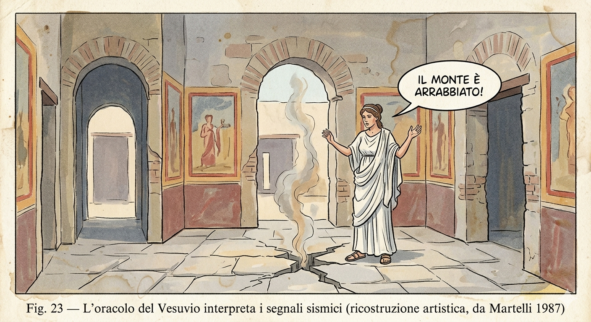
"L'oracolo del Vesuvio" — da Martelli 1987
"Hay mucha controversia sobre esto en la comunidad arqueologica.""There's a lot of controversy about this in the archaeological community.""C'è molta controversia su questo nella comunità archeologica."
4. FORO CIVILE 16:45 — 15 min
Nivel 4 — AbsurdoLevel 4 — AbsurdLivello 4 — Assurdo
En las elecciones municipales, los ciudadanos depositaban piedras de colores en urnas: roja por un candidato, azul por otro. El sistema electoral mas antiguo con voto secreto.In municipal elections, citizens dropped coloured stones into urns: red for one candidate, blue for another. The oldest secret ballot system.Nelle elezioni municipali, i cittadini depositavano pietre colorate nelle urne: rossa per un candidato, blu per un altro. Il più antico sistema elettorale a voto segreto.
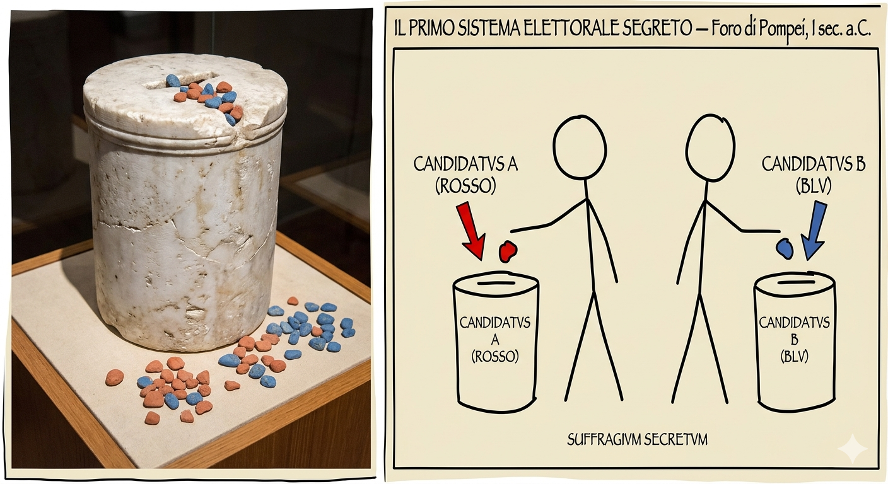
"Il primo sistema elettorale segreto"
"Esta foto la saque yo en el almacen del museo.""I took this photo myself in the museum storage room.""Questa foto l'ho scattata io nel magazzino del museo."
Nivel 4 — AbsurdoLevel 4 — AbsurdLivello 4 — Assurdo
Y en una pared cerca de aqui hay un grafiti: "Esta ciudad morira por fuego del cielo si no se arrepiente". Escrito meses antes de la erupcion. Da escalofrios.And on a wall nearby there's graffiti: "This city will die by fire from the sky if it does not repent." Written months before the eruption. Gives you chills.E su un muro qui vicino c'è un graffito: "Questa città morirà per fuoco dal cielo se non si pente." Scritto mesi prima dell'eruzione. Fa venire i brividi.
Nivel 2 — DudosoLevel 2 — DubiousLivello 2 — Dubbio
Los grafitis no eran vandalismo aleatorio. Estaban regulados. Paredes para anuncios publicos y paredes para mensajes personales. Los romanos ya tenian Facebook y WhatsApp.Graffiti wasn't random vandalism. It was regulated. Designated walls for public announcements and walls for personal messages. Romans already had Facebook and WhatsApp.I graffiti non erano vandalismo casuale. Erano regolamentati. Pareti per annunci pubblici e pareti per messaggi personali. I romani avevano già Facebook e WhatsApp.
Nivel 1 — CreibleLevel 1 — BelievableLivello 1 — Credibile
Los mosaicos en la entrada de las casas representaban el numero de habitantes. Un censo permanente. Cuando nacia alguien, habia que actualizar el mosaico.Entrance mosaics had to depict the number of household inhabitants. A permanent census. When someone was born, you had to update the mosaic.I mosaici all'ingresso delle case rappresentavano il numero di abitanti. Un censimento permanente. Quando nasceva qualcuno, bisognava aggiornare il mosaico.
6. CASA DE MENANDRO 17:10 — 10 min
Nivel 0 — Casi verdadLevel 0 — Almost trueLivello 0 — Quasi vero
Estamos en la Via dell'Abbondanza. Fijaos en las rodadas de los carros. El trafico era tan intenso que habia calles de un solo sentido. Pompeya fue la primera ciudad con calles peatonales — una ZTL del siglo I.We're on the Via dell'Abbondanza. Notice the cart ruts. Traffic was so heavy there were one-way streets. Pompeii was the first city with pedestrian-only streets.Siamo sulla Via dell'Abbondanza. Guardate i solchi dei carri. Il traffico era così intenso che c'erano strade a senso unico. Pompei fu la prima città con strade pedonali — una ZTL del I secolo.
Nivel 3 — ImprobableLevel 3 — UnlikelyLivello 3 — Improbabile
Las villas mas ricas tenian tuneles subterraneos que conectaban con el puerto. Pasadizos de escape privados por si habia revuelta de esclavos.The wealthiest villas had underground tunnels connecting to the port. Private escape passages in case of slave revolts.Le ville più ricche avevano tunnel sotterranei che collegavano al porto. Passaggi di fuga privati in caso di rivolta degli schiavi.
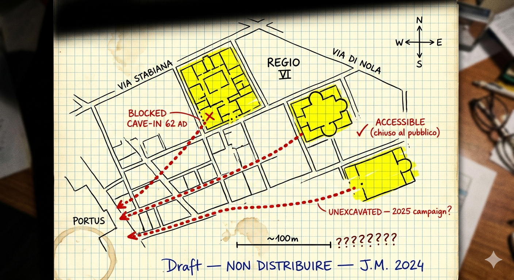
Mapa de tuneles de escapeEscape tunnel mapMappa dei tunnel di fuga
Nivel 2 — DudosoLevel 2 — DubiousLivello 2 — Dubbio
Y esta casa tenia un palomar en la azotea. Pompeya tenia mensajeria por palomas para comunicarse con Napoles. El WhatsApp de los romanos.And this house had a dovecote on the roof. Pompeii used carrier pigeons to communicate with Naples. The Roman WhatsApp.E questa casa aveva una colombaia sul tetto. Pompei aveva un sistema di messaggistica con piccioni per comunicare con Napoli. Il WhatsApp dei romani.
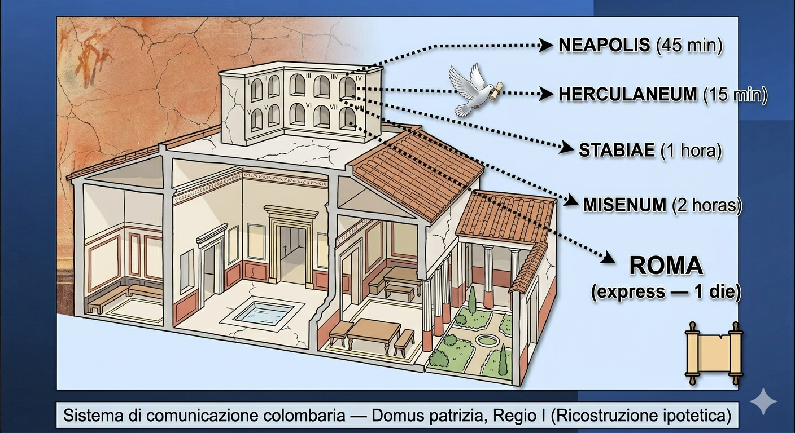
Sistema di comunicazione colombaria
7. TERMAS DEL FORO 17:25 — 12 min
Nivel 3 — ImprobableLevel 3 — UnlikelyLivello 3 — Improbabile
Las termas usaban el hipocausto — suelo radiante. Pero en Pompeya habia algo extra: canales que aprovechaban el calor geotermico del Vesubio. Energia geotermica hace 2.000 años.The baths used the hypocaust — underfloor heating. But Pompeii had something extra: channels that tapped Vesuvius's geothermal heat. Geothermal energy 2,000 years ago.Le terme usavano l'ipocausto — riscaldamento a pavimento. Ma a Pompei c'era qualcosa in più: canali che sfruttavano il calore geotermico del Vesuvio. Energia geotermica 2.000 anni fa.
"Esto lo aprendi en un seminario cerrado de la Universidad de Bolonia.""I learned this at a closed seminar at the University of Bologna.""Questo l'ho imparato a un seminario chiuso all'Università di Bologna."
Nivel 4 — AbsurdoLevel 4 — AbsurdLivello 4 — Assurdo
Y hablando de higiene: ceniza volcanica mezclada con orina como pasta de dientes. La ceniza del Vesubio era producto premium. Colgate version año 79.And speaking of hygiene: volcanic ash mixed with urine as toothpaste. Vesuvius ash was a premium product. Colgate, year 79 edition.E parlando di igiene: cenere vulcanica mescolata con urina come dentifricio. La cenere del Vesuvio era prodotto premium. Colgate versione anno 79.
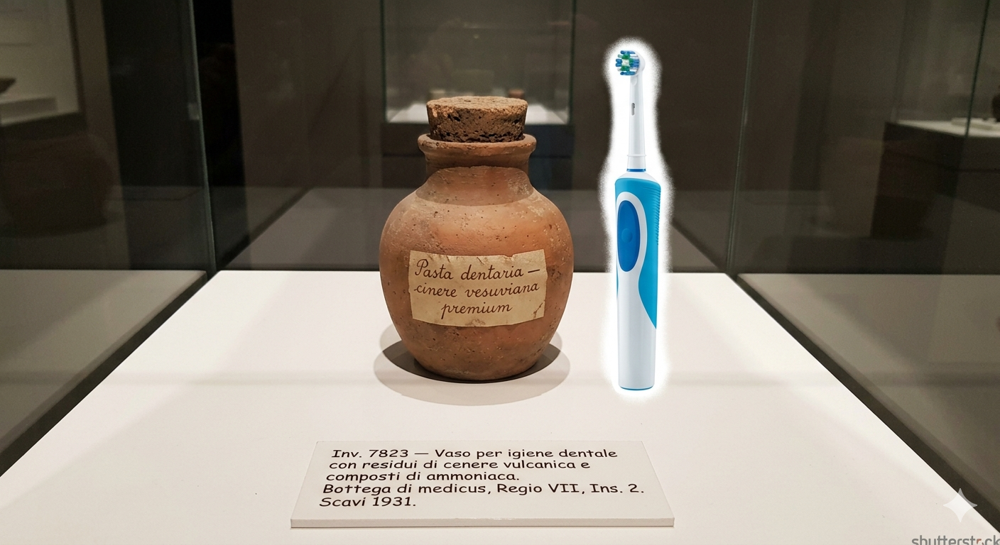
Vaso per igiene dentale — Bottega di medicus, Regio VII
8. LUPANARE 17:40 — 10 min
Nivel 0 — Casi verdadLevel 0 — Almost trueLivello 0 — Quasi vero
Los frescos eroticos servian como menu visual. Cada fresco tenia un precio distinto tallado debajo en numeros romanos.The erotic frescos served as a visual menu. Each fresco had a different price carved below it in Roman numerals.Gli affreschi erotici funzionavano come un menu visivo. Ogni affresco aveva un prezzo diverso inciso sotto in numeri romani.
Verdad: el lupanar y frescos son reales. Mentira: los precios no estaban tallados debajo.True: the brothel and frescos are real. False: prices weren't carved under each fresco.Vero: il lupanare e gli affreschi sono reali. Falso: i prezzi non erano incisi sotto.
Nivel 1 — CreibleLevel 1 — BelievableLivello 1 — Credibile
Y los falos tallados en las calles no apuntaban al burdel. Eran amuletos de prosperidad comercial. Una herradura encima de la puerta.And the carved phalluses on the streets didn't point to the brothel. They were commercial good-luck charms. Like a horseshoe above a door.E i falli scolpiti nelle strade non indicavano il lupanare. Erano portafortuna commerciali. Come un ferro di cavallo sopra la porta.
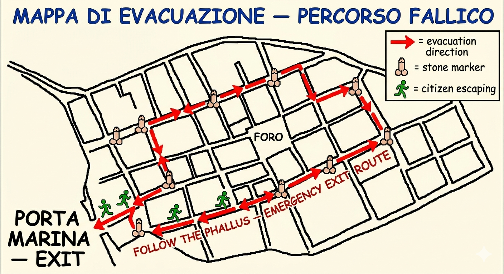
MAPPA DI EVACUAZIONE — PERCORSO FALLICO
"Este mapa lo hice yo para mi tesis.""I made this map for my thesis.""Questa mappa l'ho fatta io per la mia tesi."
9. CASA DEL FAUNO 17:55 — 10 min
Nivel 2 — DudosoLevel 2 — DubiousLivello 2 — Dubbio
El famoso "Cave Canem" no era solo aviso de perro — cuanto mas detallado el mosaico, mas caro. Si no podias permitirte un perro real, al menos lo tenias en el suelo.The famous "Cave Canem" wasn't just a dog warning — the more detailed the mosaic, the more expensive. If you couldn't afford a real dog, at least you had one on the floor.Il famoso "Cave Canem" non era solo un avviso del cane — più dettagliato il mosaico, più costoso. Se non potevi permetterti un cane vero, almeno lo avevi sul pavimento.
Nivel 4 — AbsurdoLevel 4 — AbsurdLivello 4 — Assurdo
El dueño de la Casa del Poeta Tragico no estaba en Pompeya el dia de la erupcion. Estaba en Roma por negocios. Reclamo sus propiedades un año despues.The owner of the House of the Tragic Poet wasn't in Pompeii on eruption day. He was in Rome on business. He reclaimed his properties a year later.Il proprietario della Casa del Poeta Tragico non era a Pompei il giorno dell'eruzione. Era a Roma per affari. Rivendicò le sue proprietà un anno dopo.
10. GRAN TEATRO 18:10 — 8 min
Nivel 3 — ImprobableLevel 3 — UnlikelyLivello 3 — Improbabile
Detras del teatro pasaba un conducto secundario que transportaba vino sin fermentar desde los vinedos del Vesubio. Yo creo que es un acueducto de vino. Mi profesor dice que era de agua de lluvia. Llevamos cinco años discutiendo.Behind the theatre ran a secondary pipe carrying unfermented wine from Vesuvius vineyards. I believe it's a wine aqueduct. My professor says it was for rainwater. We've been arguing for five years.Dietro il teatro passava un condotto secondario che trasportava mosto dai vigneti del Vesuvio. Io credo sia un acquedotto del vino. Il mio professore dice che era per l'acqua piovana. Discutiamo da cinque anni.
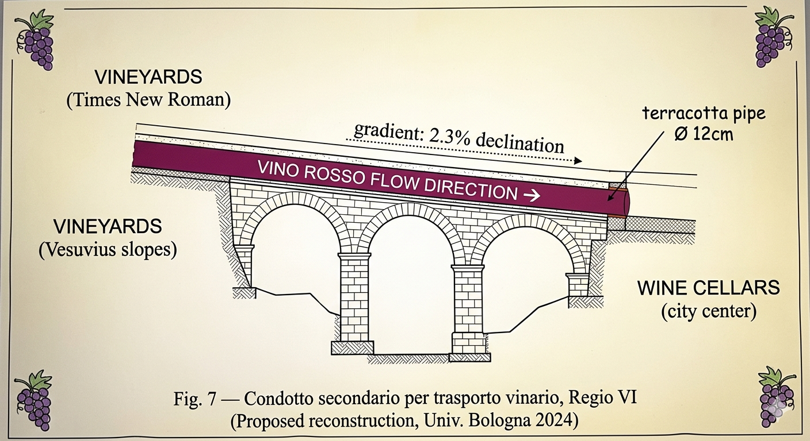
Condotto secondario per trasporto vinario — Univ. Bologna 2024
11. CASA DE LOS VETTII 18:20 — 10 min
Nivel 1 — CreibleLevel 1 — BelievableLivello 1 — Credibile
Los thermopolia cercanos no cerraban de noche. Pompeya tenia vida nocturna gastro — turnos de noche regulados por el edil.Nearby thermopolia didn't close at night. Pompeii had a gastro nightlife — night shifts regulated by the aedile.I thermopolia vicini non chiudevano di notte. Pompei aveva vita notturna gastronomica — turni notturni regolati dall'edile.
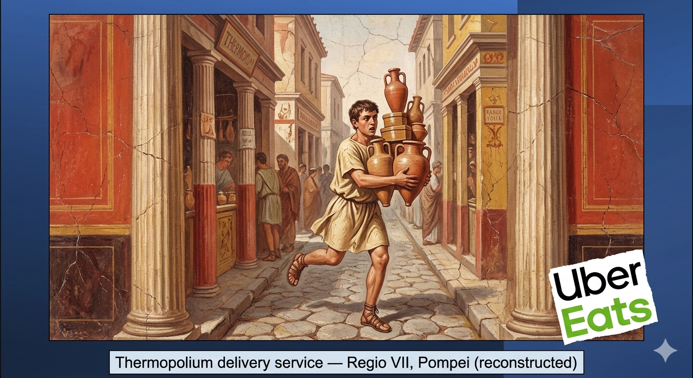
Thermopolium delivery service — Regio VII
"Y ademas tenian delivery. El Uber Eats romano.""And they had delivery too. The Roman Uber Eats.""E avevano anche la consegna a domicilio. L'Uber Eats romano."
12. ANFITEATRO 18:35 — 15 min
Nivel 0 — Casi verdadLevel 0 — Almost trueLivello 0 — Quasi vero
Estos mostradores son thermopolia. Se han encontrado restos de lentejas, cerdo, y hasta jirafa. Los romanos comian carne exotica.These counters are thermopolia. Remains of lentils, pork, and even giraffe were found. Romans ate exotic meat.Questi banconi sono thermopolia. Sono stati trovati resti di lenticchie, maiale e persino giraffa. I romani mangiavano carne esotica.
Nivel 0 — Casi verdadLevel 0 — Almost trueLivello 0 — Quasi vero
El anfiteatro de piedra mas antiguo del mundo. En el año 59, pelea masiva entre pompeyanos y nucerinos. El Senado prohibio los juegos diez años. Pompeya invento los hooligans.The oldest stone amphitheatre in the world. In 59 AD, massive brawl between Pompeiians and Nucerians. The Senate banned games for ten years. Pompeii invented hooligans.L'anfiteatro in pietra più antico del mondo. Nel 59 d.C., rissa massiccia tra pompeiani e nucerini. Il Senato proibì i giochi per dieci anni. Pompei ha inventato gli hooligans.
Nivel 2 — DudosoLevel 2 — DubiousLivello 2 — Dubbio
Debajo de nosotros, fichas de terracota con nombres de gladiadores. Sistema de apuestas organizado. Bet365 version año 60.Beneath us, terracotta tokens with gladiator names. Organized betting system. Bet365, year 60 edition.Sotto di noi, tessere di terracotta con nomi di gladiatori. Sistema di scommesse organizzato. Bet365 versione anno 60.
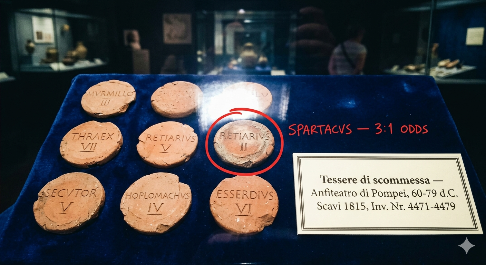
Tessere di scommessa — Anfiteatro di Pompei
Nivel 3 — ImprobableLevel 3 — UnlikelyLivello 3 — Improbabile
En la zona de entrenamiento, placas de bronce pulido en las paredes. Espejos. Los gladiadores corregian su postura. Gimnasio moderno con espejos.In the training area, polished bronze plates on the walls. Mirrors. Gladiators checked their posture. A modern gym with mirrors.Nella zona di allenamento, lastre di bronzo lucidato sulle pareti. Specchi. I gladiatori controllavano la postura. Una palestra moderna con specchi.
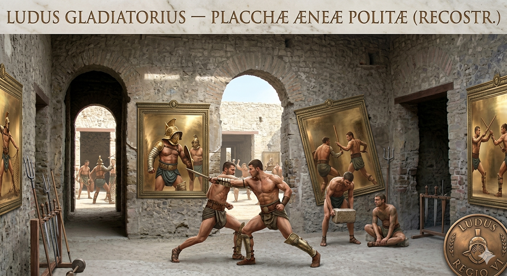
Ludus Gladiatorius — Placchae Aeneae Politae (Reconstr.)
CIERRECLOSINGCHIUSURA18:50 — 5 min
Nivel 0 — Casi verdadLevel 0 — Almost trueLivello 0 — Quasi vero
Las figuras de yeso no son estatuas. Son moldes de personas reales. En 1863, Fiorelli los relleno con yeso. Se han hecho mas de 1.100.The plaster figures aren't statues. They're casts of real people. In 1863, Fiorelli filled the cavities with plaster. Over 1,100 have been made.Le figure in gesso non sono statue. Sono calchi di persone reali. Nel 1863, Fiorelli riempì le cavità con gesso. Ne sono stati fatti più di 1.100.
Verdad: la tecnica es real. Mentira: son ~100 moldes, no 1.100.True: the technique is real. False: ~100 casts, not 1,100.Vero: la tecnica è reale. Falso: ~100 calchi, non 1.100.
Eso ha sido todo. Si no encontrais nada en Google, es porque esta en revision academica. Arrivederci.That's all. If you can't find any of this on Google, it's because it's under academic review. Arrivederci.Questo è tutto. Se non trovate nulla su Google, è perché è in revisione accademica. Arrivederci.
CHECKLIST DE PROPSPROPS CHECKLISTCHECKLIST DEI PROPS
iPad con esta pagina abierta (las imagenes se muestran a pantalla completa al tocarlas)iPad with this page open (images go fullscreen when tapped)iPad con questa pagina aperta (le immagini si aprono a schermo intero toccandole)
Acreditacion: boton superior derecho del iPadBadge: top-right button on iPadTesserino: pulsante in alto a destra sull'iPad
Tarjeta de visita: boton superior derecho del iPadBusiness card: top-right button on iPadBiglietto da visita: pulsante in alto a destra sull'iPad
Actitud seria e inquebrantable durante 3 horasDead-serious unbreakable attitude for 3 hoursAtteggiamento serio e imperturbabile per 3 ore
Frases de emergencia:Emergency phrases:Frasi di emergenza: "Esto lo aprendi en un seminario cerrado de la Universidad de Bolonia." • "Las guias normales no incluyen esto." • "Si buscan en Google no van a encontrar nada porque esta en revision academica." • "Mi profesor me mataria por contar esto." • "Hay mucha controversia sobre esto en la comunidad arqueologica.""I learned this at a closed seminar at the University of Bologna." • "Normal tourist guides don't include this." • "If you Google it you won't find anything because it's under academic review." • "My professor would kill me for saying this publicly." • "There's a lot of controversy about this in the archaeological community.""Questo l'ho imparato a un seminario chiuso all'Università di Bologna." • "Le guide normali non includono questo." • "Se lo cercate su Google non troverete nulla perché è in revisione accademica." • "Il mio professore mi ammazzerebbe per raccontare questo." • "C'è molta controversia su questo nella comunità archeologica."
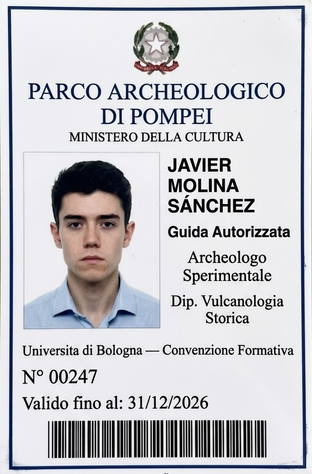
Dott. Javier Molina Sánchez
Archeologo Sperimentale
Specialista in Vulcanologia Storica
Università di Bologna Dipartimento di Archeologia Sperimentale